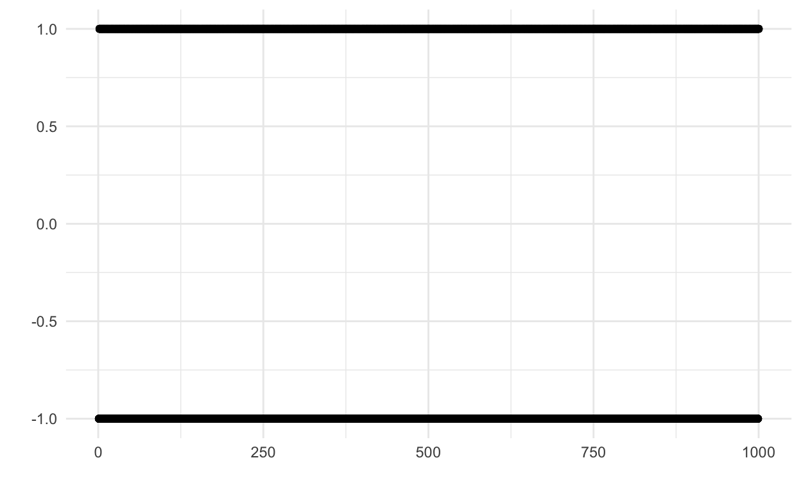

Self-Guided Summer Methods Program
The self-guided summer methods program is based on a suggested syllabus for preparing for the Political Science program at UC Berkeley’s formal and quantitative methods course. The purpose of the self-guided course is to help students prepare for the summer math camp and the introductory courses. The primary books for the self-guided course are A Mathematics Course for Political and Social Research herein dubbed M+S and Statistics: Fourth Edition herein dubbed as FPP.
Linear Algebra Sequence
The Linear Algebra sequence suggested timeline is 2-4 weeks. It is entirely composed of chapters from M+S and comprises mathematical preliminaries, vectors and matrices, and vector spaces and systems of equation.
M+S Chapter 1: Preliminaries
Exercises
Exercise 1
Party identification of delegates at a political convention is a constant
War participation of the Great Powers is a variable.
Voting record of members of Congress relative to the stated position of the president is a variable.
Revolutions in France, Russia, China, Iran, and Nicaragua is a variable.
An individual voter’s vote choice in the 1992 presidential election is a constant.
An individual voter’s vote choice in the 1960-1992 presidential elections is a variable.
Vote choice in the 1992 presidential election is a variable.
Exercise 4

Exercise 5
Let \(A = \{1,5,10\}\) and \(B = \{1,2,...,10\}\)
\(A \subset B\) is true. All elements of A are contained in B. The reverse is not true. For example \(3 \not\subset A\) but is in \(B\).
\(A \cup B = \{1,2,3,4,5,6,7,8,9,10\}\) because A is entirely contained within B, so the union of the two sets is just the set B itself.
\(A \cap B = A\) because A is entirely contained within B, so the intersection between the two sets is just the set A itself.
Partition \(B\) into two sets \(A = \{1,5,10\}\) and \(C = \{2,3,4,6,7,8,9\}\). \(C = A^C\) or the set of elements in B that are not in A. \(A^C\) is known as the complement of A.
Perhaps unsurprisingly \(A \cup C = A \cup A^C = B\).
\(A \cap C = \emptyset\) or the empty set. There are no elements simultaneously within both A and C.
Exercise 8
Prove that the sum of any two even numbers is even, the sum of any two odd numbers is even, and the sum of any odd number with any even number is odd.
A
Define the set of even numbers as the set of integers multiplied by 2 so the set of even numbers can be described as \(\{2n: \forall n \in \mathbb{I}\}\). Any two even numbers can be written as \(2n + 2m\). For example, we can write \(4+2\) as \(2(1) + 2(2)\) where \(n=1, m = 2\). Since both numbers have the common factor 2, we can pull it out and rearrange \(2(n+m) = 2n + 2m\). Now we can simply rewrite \(n+m = k\) and the expression simplifies to \(2k\) which is the equivalent definition of an even number since we have proved that this is also even.
B
The same set up as above for evens also reveals that any odd number is an even number + 1. For example, 3 is odd and \(3 = 2+1\), or more generally any odd number \(\{k : 2n +1, \forall i \in \mathbb{I}\). The sum of any two odd numbers can be written \((2n + 1) + (2m +1) = 2(n+m) + 2\). To get a little intuition that this is correct, consider \(1 + 1 = 2(0+0) + 2\), while \(1 + 3 = 2(0+1)+2\). Since any even number added to another even number yields an even number, and the first part of the expression \(2(n+m)\) we have already proven to be even, we are done.
C
We now have \(2n + 2m + 1\), for example \(2 + 3 = 2(1) + 2(1)+1\). We know from part A, that \(2n + 2m\) is even, and we can note that the definition of an odd number is an even number plus 1. Note that we can equivalently define the odd numbers as \(2k - 1\) (think 3 as either being \(2(1) + 1 \mid 2(2) - 1\))
Assume that any even number plus an odd number is equal to some even number \(2p\). Then:
\[\begin{aligned} 2n + 2m + 1 &= 2p \\ 2(n + m) + 1 &= 2p \\ 2(n + m) &= 2p - 1 \\ 2k &= 2p - 1 \end{aligned}\]
which yields a contradiction because this states that an even number is equal to an odd number.
While not explicitly required, it’s worth pointing out why the above is a contradiction.
Suppose for the sake of contradiction that an integer \(x\) was both odd and even. Then \(x = 2y\) for some integer \(y\) by the definition of evenness and \(x = 2y + 1\) by the definition of oddness. Thus, \(2y = 2y +1\) or \(1 = 2(y - z) \implies \frac{1}{2} = y-z\) but we know that \(\frac{1}{2}\) is not an integer and any integer added to another integer must always yield an integer.
M + S Chapter 2: Arithmetic Review
Exercises
Exercise 1-4
The expression on the left hand side is the problem. The goal is to complete the following equations.
\(x^1 = x\)
\(-a \times (-b)^2 = -ab^2\)
\(\sum_{i=1}^4x_i = x_1 + x_2 + x_3 + x_4\)
\(\prod_{m=6}^9x_m = x_5x_6x_7x_8x_9\)
Exercise 10
Represent the following as a ratio, a proporition, and a percentage:
- Latinos relative to all others: African American 98,642, Asian 62,346, Caucasian 436,756, Latino 105,342, Other 32,654
The ratio is 105342:630398. The proportion is \(\approx.14\). The percentage is \(\approx14.\%\)
- Independent registered voters relative to Republicans: Democrats 432, Independent 221; Republicans 312.
The ratio is 221:312. The proportion is \(\approx.41\). The percentage is \(41\%\).
- Following B but now Republican relative to Democrats
The ratio is 312:432. The proportion is \(\approx.42\). The percentage is \(42\%\).
Exercise 13
If voter turnout in the United States in 1996 was \(56\%\) and in 2000 it was \(62\%\), what was the percentage change in turnout from 1996 to 2000?
The formula for percentage change is \(\frac{x_2 - x_1}{x_1}\). Plugging in values we get \(\approx 10.7\%\)
Exercise 15
Simplify the following expressions into one term.
- \(xz + yz = z(x+y)\).
- \(mn + ln - pn = n(m + l - p)\)
- \(zyx - 2yx = yx(z-2)\)
- \((z+x)y\frac{1}{x} = \frac{y(x+z)}{x}\)
Exercise 17
Simplify \(\frac{5 + 17x + 4x + 7}{42x}\)
\(\frac{1}{2} + \frac{2}{7x}\). Group and add like terms. Split the fraction. Cancel out the common terms and reduce both fractions.
Exercise 22
Factor and reduce \(\frac{\beta - \alpha}{\alpha^2- \beta^2}\)
\(\frac{-1}{\alpha+\beta}\). The denominator can be reduced to \((\alpha+\beta)(\alpha-\beta)\). Multiply both the numerator and the denominator by \(-1\) makes the numerator \(\alpha - \beta\) and the denominator \(-(\alpha+\beta)(\alpha-\beta)\). We cancel the common factor to complete the reduction.
Exercise 23
Solve
\[\begin{aligned} 15\delta + 45 - 6\delta &= 36 \\ 15\delta + 45 - 6\delta - 36 &= 0 \\ 15\delta + 6\delta - 9 &= 0 \\ 9\delta - 9 &= 0 \\ \delta &= -1 \end{aligned}\]
Exercise 29
Solve using the quadratic formula \(2x^2 + 5x - 7\)
The quadratic formula is \(\frac{-b \pm \sqrt{b^2 - 4ac}}{2a}\).
Plugging in values we get \(x = 1 \mid x = \frac{-7}{2}\)
Exercise 30
Derive the quadratic formula by completing the sequare for the equation \(ax^2 + bx + c = 0\)
Start with a quadratic of interest and divide through by the coefficient on on \(x^2\) yielding \(x^2 - \frac{bx}{a} = -\frac{c}{a}\) after rearranging.
Divide the coefficient on x by 2 and then square it. Add that value to both sides of the equation. \(x^2 - \frac{bx}{a} + (\frac{b}{2a})^2 = \frac{c}{a} + (\frac{b}{2a})^2\).
Factor the left hand side into a \((x \pm z)^2\) form and simplify the right hand side. \((x + \frac{b}{2a})^2 = \frac{c}{a} + (\frac{b}{2a})^2\).
\((x + \frac{b}{2a})^2 = \frac{b^2 - 4ac}{4a^2}\) where we’ve multiplied \(\frac{-c}{a}\) by \(4a^2\) and eliminated an a.
\(x+\frac{b}{2a} = \pm \frac{\sqrt{b^2 - 4ac}}{2a}\). Taking the square root of both sides.
Rearrange and combine terms \(x = \frac{-b \pm \sqrt{b^2 - 4ac}}{2a}\)
Exercise 31
Solve
\[\begin{aligned} -\delta &> \frac{\delta + 4}{7} \\ -7\delta &> \delta + 4 \\ -8\delta &> 4 \\ \delta &< -\frac{1}{2} \end{aligned}\]
M+S Chapter 12: Vectors and Matrices
There are discussions of the essentials of Linear Algebra in the Lecture Notes and in the Linear Algebra computation section.
Exercises
Exercise 1
Let \(\textbf{a} = \begin{pmatrix} 10\\ 2\\ 5 \\ 2\end{pmatrix}\), \(\textbf{b} = \begin{pmatrix} 4\\ 15\\ 6 \\ 8\end{pmatrix}\), \(\textbf{c} = (2,6,8), \textbf{d} = (1,15,12), \textbf{e} = (14, 17, 11, 10)^T, \textbf{f} = (20, 4, 10, 4)^T\). Calculate each of the following, indicating that it’s not possible if there is a calculation you cannot perform.
\(\textbf{a} + \textbf{b} = (14, 17, 11, 10)^T\)
This is not possible because the vectors are not of equal length.
\(\textbf{b} - \textbf{e} = (-10, -2, -5, -2)^T\)
\(15\textbf{c} = (30, 90, 120)\)
\(-3\textbf{f} = (-60, -12, -30, -12)^T\)
\(\lVert b \rVert = \sqrt{\sum_{i=1}^n b_i^2} = \approx 18.46\).
\(\lVert c + d \rVert= \sqrt{\sum_{i=1}^n (c_i + d_i)^2} = \sqrt{3^2 + 21^2 + 20^2} = \approx 29.2\). The triangle inequality states \(\lVert c + d \rVert \leq \lVert c \rVert + \lVert d \rVert\). Focusing on the right hand side, the first term is \(\sqrt{4+36 + 64}= \sqrt{104} \approx 10.2\) and the second term is \(\sqrt{1 + 15^2 + 12^2} = \sqrt{370} \approx 19.2\) or \(29.4\) showing the triangle inequality holds.
\(\lVert c - d\rVert = \sqrt{\sum_{i=1}^n (c_i - d_i)^2} = \sqrt{1 + 9^2 + 4^2} \approx 9.9\)
\(a \cdot b = a^Tb = 10(4) + 2(15) + 5(6) + 2(8) = 116\)
\(c \cdot d = c^Td = 2(1) + 6(15) + 8(12) = 188\)
Exercise 2
Identify the following matrices as diagonal, identity, square, symmetric, triangular, or none of the above. Note all that apply.
[1] "The matrix A is" [,1] [,2] [,3]
[1,] 0 1 5
[2,] 1 -2 -1
[3,] 5 -1 2[1] "The matrix B is" [,1] [,2] [,3]
[1,] 1 0 0
[2,] 0 1 0
[3,] 0 0 1[1] "The matrix C is" [,1] [,2]
[1,] 1 1
[2,] 3 -2[1] "The matrix D is" [,1] [,2] [,3]
[1,] 0 1 2
[2,] 5 1 -1
[3,] 2 4 0
[4,] 1 1 0Square and symmetric matrix
The identity matrix is square, symmetric, triangular, and of course the identity.
This is just a square matrix.
The matrix identified is none of the above.
Exercise 3
[1] "The transpose of A is" [,1] [,2] [,3]
[1,] 0 1 5
[2,] 1 -2 -1
[3,] 5 -1 2[1] "The transpose of B is" [,1] [,2] [,3]
[1,] 1 0 0
[2,] 0 1 0
[3,] 0 0 1[1] "The transpose of C is" [,1] [,2]
[1,] 1 3
[2,] 1 -2[1] "The transpose of D is" [,1] [,2] [,3] [,4]
[1,] 0 5 2 1
[2,] 1 1 4 1
[3,] 2 -1 0 0Exercise 4
Given the matrices in the problem, perform the following calculations.
A = rbind(c(5,1,2), c(6,2,3))
B = rbind(c(3,4,5), c(-2,-3,6))
C = cbind(c(1,-5,-3), c(2,3,1))
D = rbind(c(2,1),c(4,3))
A [,1] [,2] [,3]
[1,] 5 1 2
[2,] 6 2 3B [,1] [,2] [,3]
[1,] 3 4 5
[2,] -2 -3 6C [,1] [,2]
[1,] 1 2
[2,] -5 3
[3,] -3 1D [,1] [,2]
[1,] 2 1
[2,] 4 3\(A + C\) is not possible because there are not the same dimensions.
\(A-B\)
[,1] [,2] [,3]
[1,] 2 -3 -3
[2,] 8 5 -3- \(A + 5B\)
[,1] [,2] [,3]
[1,] 20 21 27
[2,] -4 -13 33- \(3A\)
[,1] [,2] [,3]
[1,] 15 3 6
[2,] 18 6 9- \(2B - 5A\)
[,1] [,2] [,3]
[1,] -19 3 0
[2,] -34 -16 -3- \(B^T - C\)
[,1] [,2]
[1,] 2 -4
[2,] 9 -6
[3,] 8 5\(BA\) is not possible because the dimensions are not correct \(2 \times 3\) and \(2 \times 3\)
\(DA\)
[,1] [,2] [,3]
[1,] 16 4 7
[2,] 38 10 17- \(AD\) is not possible because the dimensions are not correct.
- \(CD\)
[,1] [,2]
[1,] 10 7
[2,] 2 4
[3,] -2 0- \(BC\)
[,1] [,2]
[1,] -32 23
[2,] -5 -7- \(CB\)
[,1] [,2] [,3]
[1,] -1 -2 17
[2,] -21 -29 -7
[3,] -11 -15 -9Note that \(BC \neq CB\) This is common with matrix multiplication whenever both \(BC\) and \(CB\) exist.
Exercise 6
Find the inverse of the following two matrices or explain why it does not exist.
[,1] [,2]
[1,] 4 2
[2,] 6 3 [,1] [,2]
[1,] 1 4
[2,] 3 2\(A\) does not have full rank because the first column is just the second column muliplied by 2. As a result, the matrix is not square (and singular) so there is no inverse.
\(B^{-1}\) does have an inverse. The determinant is \(ad - bc = 2 - 12 = -10\). We swap the two diagonal elements and flip the signs on the off diagonal and then multiply by 1 over the determinant \(\frac{-1}{10}\).
[,1] [,2]
[1,] -0.2 0.4
[2,] 0.3 -0.1Exercise 9
True or False?
- \(BA = AB\) for all matrices \(A,B\).
False. We’ve already shown this to be the case in 4 so the matrices B and C from that problem serve as a counter example.
\(XX^-1 \neq I\). False. Plug in the identity matrix for X as a counter example. More generally, we can produce the identity matrix by either left or right multiplying any matrix \(X\) with the inverse matrix provided the inverse matrix exists.
\(M_{i \times j}N_{j\times k} = (MN)_{i \times k}\). True.
Exercise 10
Why are the following useful?
The determinant is useful because it determines whether a matrix is invertible. If the determinant is 0, then a matrix is not invertible.
The inverse is useful because we can use it to solve the system of equations represented by the matrix. An inverse indicates whether the system has a solution.
Exercise 11
What does it mean if you have a singular matrix?
It means that the matrix is not invertible and has less thank full rank. For most applied political science research, it means that you have a perfect collinearity between two of your variables, and the error will show up when you try to run a regression via OLS.
Exercise 12
Fill in the blanks:
AB indicates that you right-multiply A by B.
AB indicates that you left-multiply B by A
M+S Chapter 13: Vector Spaces and Systems of Equations
Exercises
Exercise 1
Let \(\textbf{a} = \begin{pmatrix} 10\\ 2\\ 5 \\ 2\end{pmatrix}\), \(\textbf{b} = \begin{pmatrix} 4\\ 15\\ 6 \\ 8\end{pmatrix}\), \(\textbf{e} = (14, 17, 11, 10)^T, \textbf{f} = (20, 4, 10, 4)^T\). Calculate each of the following, indicating that it’s not possible if there is a calculation you cannot perform.
- Write the most general vector that is a lineaer combination of \(\textbf{a}\) and \(\textbf{b}\).
\[\begin{aligned} s\textbf{a} + t\textbf{b} &= \begin{pmatrix} 10s + 4t \\ 2s + 15t \\ 5s + 6t \\ 2s + 8t \end{pmatrix} \end{aligned}\]
No. At most there are 2 that linearly dependent. For example \(\textbf{e} = \textbf{a} + \textbf{b}\), while \(\textbf{f} = 2\textbf{a}\)
Since there are only two linearly independent vectors, the vectors span a two-dimensional space.
Exercise 2
Solve the following systems of equations using substitution or elimination or both.
Exercise 4
From the previous chapter, consider the following matrices.
[1] "D" [,1] [,2]
[1,] 1 2
[2,] 3 4[1] "E" [,1] [,2]
[1,] 3 1
[2,] 6 2[1] "g" [,1]
[1,] 2
[2,] 3
[3,] 1[1] "h" [,1] [,2] [,3]
[1,] 1 2 3Rank of D is 2.
Rank of E is 1 because the first column is 3 times the second.
Solve \(D\textbf{x} = \textbf{g}\) for \(\textbf{x}\) using matrix inversion.
As stated, this is not possible because \(\textbf{g}\) has dimension 3 and \(D\) is of rank 2.
- Solve \(\textbf{x}E = \textbf{h}\) for \(\textbf{x}\) using matrix inversion.
Once again, E is singular which means it is not a full rank matrix so we cannot use matrix inversion. There is in fact an infinite number of solutions to the system of equations.
Exercise 6
Why is Cramer’s rule useful?
Cramer’s rule is useful for solving for just one of the variables in a system of equations without having to solve the entire system of equations. It is a method of solving systems of linear equations by dividing the value of two determinants. To find whichever variable we are interested in, just evaluate the determinant quotient $.
For example, consider the system of equations
\[\begin{pmatrix} 2x + y + z = 1 \\ x - y + 4z = 0 \\ x + 2y - 2z = 3 \end{pmatrix}\]
and imagine we only are interested in solving for \(x\). First, form find the value of the coefficient determinant.
\[D = \begin{vmatrix} 2 & 1 & 1 \\ 1 & -1 & 4 \\ 1 & 2 & 2 \end{vmatrix}\]
which here becomes \(4 + 4 + 2 +1 -16 + 2 = -3\)
Next, form \(D_z\) by replacing the third column of values with the answer column.
\[D_z = \begin{vmatrix} 2 & 1 & 1 \\ 1 & -2 & 0 \\ 1 & 2 & 3 \end{vmatrix}\]
which comes out to \(-6 + 0 + 2 +1 - 0 -3 = -6\).
Now just divide the two values \(z = \frac{D_z}{D} = \frac{-6}{-3} = 2\).
Note that in a world in which \(D = 0\), we cannot use Cramer’s Rule. Incidentally, Cramer’s Rule is rarely used in computation because it is often unstable.
Exercise 7
What does it mean if you have a singular matrix?
See the answer in Exercise 11 from Chapter 12
Calculus Sequence
The Calculus sequence suggested timeline is 2-4 weeks. It is entirely composed of chapters from M+S and comprises mathematical preliminaries, functions, limits and continuity, sequences and series and sets, introduction to derivatives and integrals, and an introduction to extrema and multivariate calculus.
M+S Chapter 3: Functions
Exercises
- Simplify \(h(x) = g(f(x))\) where \(f(x) = x^2 +2\) and \(g(x) = \sqrt{x-4}\).
\[\begin{aligned} g(f(x)) &= \sqrt{(x^2 +2 ) - 4} \\ g(f(x)) &= \sqrt{x^2 - 2} \end{aligned}\]
- Simplify \(h(x) = f(g(x))\) with same \(f\) and \(g\) as previous answer. Is it the same as 2? No
\[\begin{aligned} h(x) &= (\sqrt{x-4})^2 + 2 \\ h(x) &= x-2 \end{aligned}\]
- Find the inverse function of \(f(x) = 5x - 2\).
\[\begin{aligned} \frac{x + 2}{5} \end{aligned}\]
Simplify \(x^{-2}x^3\). \(x\)
Simplify into one term \(ln(3x) - 2ln(x +2)\). \(ln\left(\frac{3x}{x+2} \right)\)
Rewrite \(y = \alpha + x_1^{\beta_1} + \beta_2x_2 + \beta_3x3\) by taking the log of both sides. Is the result a linear (affine function)?
\[\begin{aligned} ln(y) &= ln(\alpha + x_1^{\beta_1} + \beta_2x_2 + \beta_3x_3) \\ ln(y) &= ln(\alpha) + \beta_1ln(x1) + ln(\beta_2x_2) + ln(\beta_3x_3) \end{aligned}\]
- Rewrite \(y = \alpha + x_1^{\beta_1} + x_2^{\beta_2} + x_3^{\beta_3}\) by taking the log of both sides. Is the result a linear (affine) function? Yes it’s affine.
\[\begin{aligned} ln(y) &= ln(\alpha) + \beta_1 ln(x_1) + \beta_2 ln(x_2) + \beta_3 ln(x_3) \end{aligned}\]
M+S Chapter 4: Limits and Continuity, Sequences and Series, and More on Sets
Exercises
- Draw a graph to show that the sequence {1,-1,1,-1,…} is divergent.

- Find the sum of the infinite series \(\sum_{t=0}^\infty (\delta^t)^2\)
Recall that \(\sum_{t=0}^\infty \delta^t = \frac{1}{1-\delta}, \forall \delta < 1\). As long as this condition holds, we can use the same expression giving us \(\frac{1}{1-\delta^2}\)
- Show whether \(f(x) = x + x^3\) has a limit at x = 3 and if so, the value of the limit.
Yes this has a limit. The limit is 30. \((3) + 3^3 = 30\).
- Show whether \(f(x) = \frac{3x^2 - 12}{x -2}\) has a limit at \(x = 2\) and if so the value of the limit.
Factor the numerator. \(f(x) = \frac{3(x^2 - 4)}{x -2}\). Note that we can factor the () expression as \((x-2)(x+2)\). Cancel out the common term. We are left to plug in the value 2 and the expression is 12.
- For each of the following sets, state whether they are (a) open, closed both or neither, (b) bounded (c) compact (d) convex.
- \([1,3]\) closed, bounded, compact, convex
- Is the function \[\begin{aligned}f(x) = \begin{cases} x^3 - 3x + 4 & x &\leq 3 \\ x^2 & x &> 3 \end{cases}\end{aligned}\]
continuous? If so, why? If not what changes would make it continuous?
The function is not continuous because it does not have the same right hand side and left hand side limit. The function’s limit is 22 at 3, but 9 as it approaches 3 from the right. One could \(\pm 13\) to the appropriate part to make it continous.
M+S Chapter 5: Introduction to Derivatives
Exercises
\(y=6\). The derivative of a constant is 0.
\(y = 3x^2\). The derivative is \(6x\).
\(y = x^2 - 2x^2 - 1\). The derivative is \(3x^2 -4x\).
\(y = x^4 + 5x\). The derivative is \(4x^3 + 5\).
\(y = x^8\). The derivative is \(8x^7\).
\(y = 4x^3 - x + 1\). The derivative is \(12x^2 -1\).
To demonstrate on this problem the specific calculations.
\[\begin{aligned} f'(x) &= lim_{x\rightarrow 0}\frac{4(x+h)^3 -(x+h) + 1 - 4x^3 + x -1}{h} \\ f'(x) &=lim_{x\rightarrow 0}\frac{12x^2h + 12xh^2 + 4h3 -h}{h} \\ f'(x) &=lim_{x\rightarrow 0} 12x^2 + 12xh + 4h^2 = 1\\ f'(x) &=12x^2 -1 \end{aligned}\]
\(y = 2x^4 + x^2 - 1\). The derivative is \(8x^3 + 2x\).
\(y = 5x^5 + 4x^4 + 3x^3 + 2x^2 + x + 1\). The derivative is \(25x^4 + 16x^3 + 9x^2 + 4x + 1\)
\(y = 7x^4 - 9x^3 + 5x + 117\). The derivative is \(28x^3 - 27x^2 + 5\).
\(y = 27x^3 + 5x^2 -x + 13\). The derivative is \(81x^2 + 10x -1\)
- The graphs are not included.
\(f(x) = 2x^2 + 7\). The derivative is \(4x\).
\(f(x) = x^3 - x + 1\). The derivative is \(3x^2 -1\)
- For each of the following find the partial derivative with respect to x.
\(f(x,z) = 3zx + 2z\). The partial derivative is \(\frac{\partial_f}{\partial_x} = 3z\).
\(f(x,z) = x^2 + 2z^2\). \(\frac{\partial_f}{\partial_x} = 2x\).
\(f(x,z) = 3z^2 - z + 1\). \(\frac{\partial_f}{\partial_x} = 0\)
M+S Chapter 6: Rules of Derivatives
Exercises
- Find the derivative of (every other) \(y\) with respect to \(x\) for the following.
\(y = 6\). The derivative is \(0\).
\(y = x^3 - 2x^2 - 1\). The derivative is \(3x^2 - 4x\).
\(y = x^8\). The derivative is \(8x^7\).
\(y = ax^3 + 6\). The derivative is \(3ax^2\)
\(y = ax^n - 1\). The derivative is \(nax^{n-1}\)
\(f(x)\cdot g(x) = (13x + 2x^3)(x^5 - 4x + r)\)
Use the product rule \(f'g + fg'\). \(16x^7 + 78x^5 - 32x^3 + 6rx^2 - 104x + 13r\)
\(y = (x-3)^3\). The derivative is \(3(x-3)^2\)
\(y = 5x^7 + 7x^4 + 3x^2\). The derivative is \(35x^6 + 28x^3 + 6x\).
\(y = x^3 + x^2 + 1\). The derivative is \(3x^2 + 2x\).
\(y = (3x^2 + 4)(2x^3 + 3x + 5)\). The derivative is \(30x^4 + 51x^2 + 30x + 12\)
\(y = (x+5)^2\). The derivative is \(2(x+5)\)
\(y = (\frac{x^2+1}{x+1})^2\).
Use the quotient rule. \(\frac{f'g - f'g}{g^2}\). The derivative is \(\frac{2(x^2 +1)(x^2x -1)}{(x+1)^3}\)
- \(y = \frac{x^3 + x^2 + x + 1}{x^2 + x +1}\). The derivative is \(\frac{x^2(x^2 + 2x + 3)}{(x^2 + x + 1)^2}\)
- Using the rules in this chapter, differentiate the following:
\(f(x) = a_nx^n + a_{n-1}x^{n-1} + ... + a_0\). Try also expressing the derivative as a series.
\(f(x) = \frac{x^2-4}{x^5 - x^3 + x}\). The derivative is \(-\frac{3x^6 - 21x^4 + 11x^2 -4}{x^2(x^4 -x^2 +1)^2}\)
\(xg(x) - 7x^2\) where \(g(x) = e^xln(x)\). The derivative is \(e^xln(x) + \frac{e^x}{x} - 14x\)
\(f(x) = e^{5x}\). The derivative is \(5e^{5x}\).
\(f(x) = \frac{1}{2}e^{\frac{x}{2}}\). The derivative is \(\frac{e^{\frac{x}{2}}}{4}\)
\(f(x) = e^{ln(2x)}\). The derivative is \(2\). \(e^{ln(2x)} = 2x\) by definition.
\(f(x) = x^2g(x) + 6x^2\) where \(g(x) = log_a(x) + x^7\). The derivative is \(\frac{2x ln(x)}{ln(a)} +7x^6 + \frac{x}{ln(a)} + 12x\)
- Show that \(\frac{dlog_a(x)}{dx} = \frac{1}{x(ln(a))}\)
M+S Chapter 7: Integrals
Exercises
- Integrate the following derivatives to find \(y\)
\(f'(x) = 4x + 3\)
\(f'(x) = -2x +3 - 4x^3\)
\(f'(x) = -3 + 4x\)
\(f'(x) = 4x^4 + 3x^2\)
\(f'(x) = 4x^4 + 3x^3 + 2x^2 + x + 1\)
\(f'(x) = x^{-1} + 3x^2\)
\(f'(x) = 2e^{5x}\)
\(f'(x) = ln(3x)\)
- Which of the following below best describes \(\int_{a}^b\frac{dy}{dx}dx\)? It is the integral of the derivative of y with respect to x over the range a to b.
6 Compute the following integrals:
\(\int (a_nx^n + a_{n-1}x^{n-1}+...+a_0)dx\)
\(\int (3x^{3/2} - 2x^{-5/4} + 4^x)dx\)
\(\int_{1}^{16} (5x^{3/2}-2x^{-5/4})dx\)
\(\int (-\frac{1}{x}ln(\frac{1}{x}))dx\)
\(\int (xe^{3x^2+1})dx\)
\(\int_{2}^{4}(3x^2 + x + 5)dx\)
M+S Chapter 8: Extrema in One Dimension
Exercises
- Find all extrema (local and global) of the following functions on the specified domains, and state whether each extremum is a minimum or maximum and whether each is only local or global on that domain.
\(f(x) = x^3 - x +1, x\in[0,1]\)
\(f(x) = \frac{x^2}{e^x}, x\in[0,\infty)\)
\(f(x) = 2 - 3x, x \in [-3,10]\)
\(f(x) = 4x^3 + x^2 - 2x + 3, x \in [-1,1]\)
\(f(x) = \frac{1}{4}x^4 - \frac{4}{3}x^3 + \frac{1}{2}x^2 + 6x + 2, x \in [-2,3]\)
- The utility that a legislator extracts from a policy in a one dimensional policy space varies as a quadratic loss function, \(U(x)\), of the form \(U(x) = -a(x-x_0)^2\), where \(x_0\) represents the ideal location of the legislator and \(x\) represents the location of the current policy in the one-dimensional policy space. Prove that the legislator’s utility is maximized when the policy is located at \(x=x_0\).
First find the derivative and set it to 0. \(U'(x) = -2a(x-x_0) = 0\).
We can divide both sides by \(-2a\) to get \(x-x_0 = 0 \implies x^* = x_0\).
Now check to confirm that the second derivative is negative with respect to x. \(U''(x) = -2a < 0, \forall a > 0\), which implies that the stationary point is a global maximum and the proof is completed.
M+S Chapter 15: Multivariate Calculus
There are no suggested problems for this chapter, but it is good to read.
Random Variables and Probability Sequence
The Random Variables and Probability sequence suggested timeline is 1-2 weeks. It is entirely composed of chapters from M+S and FPP and comprises mathematical preliminaries, introduction to probability, and an introduction to discrete distributions and continuous distributions.
M+S Chapter 1: Preliminaries
This material is already discussed in the Linear Algebra Sequence
FPP Chapter 4,6
Exercises
Chapter 4 Exercise Set A (3,4,5,9)
- Which of the following two lists has a bigger average?
- \(10, 7, 8, 3,5,9\)
ii) \(10, 7, 8, 3,5,9,11\)
The mean will always be pulled in the direction of outliers.
- Ten people in a room have an average height of 5 feet 6 inches. An 11th person who is 6 feet 5 inches tall enters the room. Find the average height of all 11 people.
67 inches or 5’7”. We can think of this as having 10 people in a room who are 5’6” and one person who is 6’5” and computing the average.
- Same as 4 except there are now 21 people in the room and a new person enters who is 6 feet 5 inches.
The new answer is now 66.5 inches or 5 feet 6 inches.
- Average hourly earnings are computed each month by the BLS using payroll data from commercial establishments. The BLS figures the total wages paid out (to nonsupervisory personnel), and divides by the total hours worked. During recessions, average hourly earnings typically go up. When the recession ends, average hourly earnings often start going down. How can this be?
During a recession, lower wage workers are often laid off. This will mechanically make the average wage rise. When the recession is over these workers are hired back, driving down the average wage.
Chapter 4 Exercise Set B (1,2,5)
There are three histograms. The answers are 50, 25, and 40.
The median is equal to the average in the first two histograms but to the left of the third.
For registered students at universities in the U.S., which is larger: average age or median age?
Average age because we expect most students to be between 18-22 but also older students which does a long right tail.
Chapter 4 Exercise Set C (1,3)
- Find the average and RMS size of the numbers on the list: \(1, -3, 5, -6, 3\).
The RMS is \(\sqrt{\frac{1}{n}\sum_{i=1}^n x_i^2}\). Here that computation yields 0 for the average and 4 for the RMS.
- Find the RMS size of the list \(7,7,7,7\). Repeat for \(7,-7,7,-7\).
In both cases, the RMS is 7.
Chapter 4 Exercise Set D (1,2,3,6,8)
- The public health service found that for boys age 11 in HANES2, the average height was 146cm and the SD was 8cm. Fill in the blanks below.
- One boy was 170cm. He was above average by 3 SDs.
- Another boy was 148cm tall. He was above average by \(\frac{1}{4}\) SDs.
- A third boy was 1.5 SDs below average height. He was 134cm tall.
- If a boy was within 2.25 SDs of average height, the shortest he could have been is 128cm tall and the tallest he could have been was 164cm tall.
- Continuing the previous exercise, there are four boys with heights 150, 130, 165, 140 cm. Match heights with descriptions “unusually short”, “about average”, “unusually tall”
150 and 140: about average. 130: unusually short. 165: unusually tall.
- Each of the following lists has an average of 50. For which one is the spread of the numbers around the average biggest? Smallest?
- \(0,20,40,50,60,80,100\)
- \(0, 48,49,50,51,52,100\) Smallest
- \(0,1,2,50, 98,99,100\) Biggest
The problem has sketches of histograms and asks you to match them to choices. The correct choices are i, ii, v respectively.
One investigator takes a sample of 100 men age 18-24 in a certain town. Another takes a sample of 1000 such men. Which investigator will get a bigger average for heights or should the averages be about the same. Repeat with standard deviations. Which investigator is likely to get the tallest of the sample men or are the chances about the same? Repeat with shortest of the sample men.
The averages and standard deviations will be about the same. In both cases, the samples are drawn from the same underlying population and 100 is reasonably large. The range will be bigger in the larger sample. Here’s a little R simulation showing this principle.
set.seed(123)
pop = rnorm(100000, mean = 72, 4)
small = sample(pop, size = 100, replace = F)
large = sample(pop, size = 1000, replace = F)
print(paste0("Mean of small: ", mean(small)))[1] "Mean of small: 72.1097400452601"[1] "Mean of large: 72.1080415819342"[1] "SD of small: 3.59422670373852"[1] "SD of large: 4.05933961830242"[1] "Min of small: 63.2414773222852"[1] "Min of large: 60.5438232355171"[1] "Max of small: 82.6366279193488"[1] "Max of large: 85.4581984517501"Chapter 4 Exercise Set E (5,8,11,12)
- For each list below, work out the average, the deviations from average and the standard deviation.
\(1,3,4,5,7\). The mean is is 4. The deviations are \(-3,-1,0,1,3\). The standard deviation is 2.
\(6,8,9,10,12\). The mean is 9. The deviations are identical to i. The standard deviation is also 2.
For part b, the relationship is that the list in ii adds 5 to the values in i. This mechanically increases the average by 5 but has no effect on the deviations and standard deviation.
- The Governor of California proposes to give all state employees a flat raise of $250 a month. What would this do the average monthly salary of state employees? to the SD?
The average would increase by $250. There would be no change in the SD.
Repeat the same question but with 5% increases in salary across the board?
The average and the standard deviation would increase by 5%.
- Can the SD ever be negative?
No, and if you find a negative standard deviation you have a bug. Partially this is because the standard deviation is a function of a square root, which does not have negative numbers in the domain, and partially because the computation first requires squaring all values.
- For a list of positive numbers, can the SD ever be larger than the average?
Yes. In a world where most numbers are clustered around a point with a big outlier. For example \(1,1,25\) will produce a standard deviation of \(\approx 14\) but an average of 9.
FPP Chapter 13, 14
Exercises
13 Exercise Set A (2,4,5)
- A coin will be tossed 1000 times. About how many heads are expected?
Presuming the coin is fair, about 500.
- In five-card draw poker, the chance of being dealt a full house is 0.14 of 1%. If 10000 hands are dealt, about how many will be a full house.
14
- One hundred tickets will be drawn at random with replacement from one of the two boxes a) [1,2] or b) [1,3]. You’re paid the value of the tickets drawn. Which box is better and why?
The second box because it has a higher range.
13 Exercise Set B (1,4)
- Two tickets are drawn at random without replacement from the box [1,2,3,4]. What is the chance that the second ticket is 4? What is the chance that the second ticket is 4, given the first is 2?
The first is 1/4 because the tickets have not been drawn. There are 24 possible orderings, and in 6 of them the 4 is in the second position. The answer to the second is 1/3. Given that the first number is a 2, there are only 3 numbers left one of which is a 4 and all are equally likely to be drawn.
- Five cards are dealt off the top of a well-shuffled deck. What is the probability that the 5th card is the queen of spades? Find the chance that the 5th card is the queen of spades, given the first 4 cards are hearts.
Similar logic to the problem above. The first answer is 1/52. The second answer is 1/48.
13 Exercise Set C (1,4,7)
- A deck is shuffled and two cards are dealt. What is the probability that the second card is a heart given the first card is a heart? What is the probability that the first card is a heart and the second card is a heart.
For the first part, we removed one heart from the deck. The chance is thus \(\frac{12}{51}\). For the second part, there are thirteen hearts to pick on the first draw and 12 on the second. The result is \(\frac{13}{52}\frac{12}{51} = \approx 6\ %\)
- A die will be rolled six times. You have a choice to either win $1 if at least one ace shows up or to win $1 if an ace show up on all rolls. Which do you choose?
The former, the probability of at least one ace is \(1-P(NA)\) which is equivalent to \(1-\left(\frac{5}{6}\right)^6 \approx 67\%\). The latter is functionally zero.
- A coin is tossed three times. What is chance of getting three heads? What is the chance of not getting three heads? What is the chance of getting at least 1 tail? At least 1 head?
We’ll assume that the coin is fair. The chance of getting three heads from three independent tosses is \(\left(\frac{1}{2}\right)^3 = \frac{1}{8}\). The chance of not getting three heads is the complement so \(\frac{7}{8}\). The chance of getting at least 1 tail is equivalent to the the chance of not getting three heads. At least one head is the same answer just reversing what we want at least one of.
13 Exercise Set D (1,2,8)
This exercise is a picture question. The first two are independent. The third is dependent.
This exercise is also a picture clue. The first two are again independent. The third is dependent.
In a certain psychology experiment, each subject is presented with three ordinary playing cards, face down. The subject takes one of these cards. The subject also takes one card at random from a separate full deck of playing cards. If the two cards are from the same suit, the subject wins a prize. What is the chance of winning? If more information is needed, explain what you need and why.
The answer is \(\frac{1}{4}\). To see why, imagine that all three cards are the same card, say the King of Hearts. The probability that you draw a heart from the full deck is the same for each. Now imagine that the three cards are different, say the Kings of Hearts, Spades, and Diamonds. No matter which one you draw, there is no effect on the second full deck of cards, so once again the probability you win is the same.
14 Exercise Set A (1,4)
- What is the chance of throwing a total of 5 spots with two fair die?
\(\frac{1}{9}\). There are four possible combinations of 5 spots \((2,3),(3,2),(4,1),(1,4)\) and 36 total possibilities.
- This is a picture question. The correct probabilities are \(\frac{1}{2}, \frac{1}{3}, \frac{1}{2}\). It is no different than the dice problem conceptually.
14 Exercise Set B (2,3,6)
This is a picture problem with three overlapping circles. Count the dots in the circles and be careful not to double count.
Two cards are dealt off the top of a well-shuffled deck. You have a choice: win $1 if the first card is an ace or the second card is an ace. win $1 if at least one of the two cards is an ace. Which option is better?
They’re the same probability. Or is equivalent to at least one here.
- A number is drawn at random from a box. There is a 20% chance for it to be 10 or less, a 10% chance for it to be 50 or more. True or False: the chance of getting a number between 10 and 50 (exclusive) is 70%. Explain briefly.
True. This follows from the addition rule and is in some sense defining the probability density function of this variable.
14 Exercise Set C (1,3)
- A large group of people are competing for all-expense-paid weekends in Philadelphia. The MC gives each contestant a well-shuffled deck of cards. The contestant deals two cards off the top of the deck, and wins a weekend in Philadelphia if the first card is the ace of hearts or the second card is the king of hearts
All of the contestants whose first card was the ace of hearts are asked to step forward. What fraction of the contestants do? \(\frac{1}{52}\).
The contestants return to their original places. Then, the ones who got the king of hearts for their second card are asked to step forward. What fraction of the contestants do. \(\frac{1}{52}\)
Do any of the contestants step forward twice? Almost surely yes. While unlikely it is possible that someone got both the aces of hearts and then the king of hearts. \(\frac{1}{52}\frac{1}{51}\)
True or false and explain. The chance of winning a weekend in Philadelphia is \(\frac{1}{52} + frac{1}{52}\). False, we have double counting that we need to deal with \(P(A) + P(B) - P(A \cap B)\)
- A deck of cards is shuffled. True or false and explain briefly.
The chance that the top card is the jack of clubs equals \(\frac{1}{52}\). True, the jack has to go somewhere. It has 52 possible positions. One of them is the first card.
The chance that the bottom card is the jack of diamonds equals \(\frac{1}{52}\). True for a similar argument as above.
The chance that the top card is the jack of clubs or the bottom card is the jack of diamonds equals \(\frac{2}{52}\). False, these aren’t mutually exclusive. so we need to take care of the probability where the jacks are both in these places.
The chance that the top card is the jack of clubs or the bottom card is the jack of clubs is \(\frac{2}{52}\). True. These are two independent events.
The chance that the top card is the jack of clubs and the bottom card is the jack of diamonds equals \(\frac{1}{52}\frac{1}{52}\). False, we have a conditional probability here..
The chance that the top card is the jack of clubs and the bottom card is the jack of clubs equals \(\frac{1}{52}\frac{1}{52}\). False, the probability here is 0. This event is impossible.
14 Exercise Set D (3,5)
- A box contains four tickets, one of them is marked with a star and the other three are blanks. Two draws are made with replacement from the box.
What is the chance of getting a blank ticket on the first draw? \(\frac{3}{4}\).
What is the chance of getting a blank ticket on the second draw? Same as a.
What is the chance of getting a blank ticket on the first draw and getting a blank ticket on the second draw? \(\frac{3}{4}\frac{3}{4} = \frac{9}{16}\)
What is the chance of not getting the star in the two draws? Same as c.
What is the chance of getting the star at least once in the two draws? \(1-\frac{9}{16} = \frac{7}{16}\).
- A pair of dice is rolled 36 times. What is the chance of getting at least one double ace? The answer is \(1 -\left(\frac{35}{36}\right) \approx 64\%\). You might be tempted to think because there’s a chance on the first roll and the same on the second, but this would be incorrect because we are interested in an event happening over time, not the likelihood on any given roll.
M+S Chapter 9: Introduction to Probability
There are no exercises assigned in this chapter, but it is good to read.
M+S Chapter 10: Introduction to Discrete Distributions
There are no exercises assigned in this chapter, but it is good to read.
FPP Chapter 8, 9
Exercises
FPP Chapter 8 Exercise Set B (1,2,6,9)
- Would the correlation between the age of a second hand car and its price be positive or negative? Why? Negative, in general older cars are cheaper.
What about the correlation between weight and miles per gallon? Negative, heavier cars are less fuel efficient.
These are picture questions
These are picture questions
True or False, and explain. If the correlation coefficient is .9 then 90% of the points are highly correlated? False. The correlation coefficient is a measure of linear association between two variables.
FPP Chapter 8 Exercise Set C(1) and D(1)
- True or False:
The standard deviation line always goes through the point of averages. True
The standard deviation always goes through the point (0,0). False.
- For each of the datasets below calculate R.
\(r = \frac{1}{n}\sum_{i=1}^n x_iy_i\) where \(x,y\) are standardized units. To standardize a variable, we compute \(\frac{x_i - \bar{x}}{\sqrt{\frac{1}{N}\sum_{i=1}^N(x_i - \bar{x})^2}}\) for all values of \(x\). Inspection reveals that the third set are perfectly negatively correlated, but we’ll do the calculation anyway.
standardize = function(v){
sdv = sqrt((1/length(v))*sum((v-mean(v))^2))
return((v-mean(v))/sdv)
}
r = function(y, x){
xs = standardize(x)
ys = standardize(y)
round(mean(xs*ys),2)
}
x = 1:7
y = list(c(6,7,5,4,3,1,2), c(2,1,4,3,7,5,6), 7:1)
lapply(y, r, y = x)[[1]]
[1] -0.93
[[2]]
[1] 0.82
[[3]]
[1] -1FPP Chapter 9 Exercise Set A (2,6,9)
- A small dataset of two variables has a correlation coefficient of \(\approx .76\). If you switch the two columns does this change \(r\)?
No, like covariance, correlation does not depend on the order of the variables.
- Suppose the correlation between \(x\) and \(y\) is 0.73.
Does the scatter diagram slope up or down? Slopes up.
If you multiply all the values of \(y\) by \(-1\), would the new scatter diagram slope up or down? It would now slope down.
What happens to the correlation? Correlation stays the same but the sign flips.
- This problem provides several datasets and asks you to give the correlations. You’ll find that the four datasets are just column switched versions of the first two or multiples of the first two.
FPP Chapter 9 Exercise Set B(4)
B.4. This is a picture clue that asks about calculating \(r\) without labels. You’ll find that the answer is yes you can. The points are \(\{(1,1), (2,1), (2,2), (3,2)\}\) and the same flipped in the other direction. In both cases, the \(r\) value is the same, though the sign will flip.
[1] 0.71[1] -0.71M+S Chapter 11: Continuous Distributions
There are no exercises for this chapter, but it is good to read.
FPP Chapter 10,11,12,16,17
Exercises
FPP Chapter 10
A.1 In a certain class, midterm scores average out to 60 with an SD of 15, as do scores on the final. The correlation between midterm scores and final scores is about 0.5. Estimate the average final score for the students whose midterm scores were \([75, 30, 60]\).
For the first answer the value is one standard deviation above so \(75-7.5 = 67.5\), for the second \(30 + 15 = 45\), and for the third it is \(60 - .5(0) = 60\).
A.4. For women age 25-34 in the US in 2005, with full-time jobs, the relationship between education (years of schooling completed) and personal income can be summarized as follows: average education is approximately 14 years with a SD of 2.4 years. Average income is approximately $32000 with a SD of $26000 and a correlation of approximately .34. Estimate the average income of those women who have finished high school but have not gone on to college.
The women in the problem have completed 12 years of schooling, which is two years below average. That implies that they are \(\frac{2}{2.4} \approx .83\) SD below average in schooling. The estimate is then \(.83r \approx .28\) SD in income or \(.28(26000) \approx 7300\). Their average income is estimated as \(32000-7300 = 24700\)
A.5 Suppose \(r = -1\). Can you explain why a one-SD increase in \(x\) is matched by a one-SD decrease in y?
In this case, the variables are perfectly negatively correlated. Since in a bivariate regression, the coefficient of interest is \(\rho\frac{\sigma_y}{\sigma_x}\), that means that any increase in the standard deviation of \(x\) must be meant by a corresponding decrease in the standard deviation of \(y\)
B.1 From the picture. True or false: There is a positive association between husband’s income and wife’s income?
True. We can imagine that individuals pair with other individuals who are higher earners.
Why is the dot at 127,500 so far below the regression line?
Chance error. There are few couples behind this dot.
If you use the regression line to estimate wife’s income from husband’s income would your estimates generally be a little to high, little too low, or just right for the couples in the sample with husbands income in the range 65k to 80k.
B.3 This is a picture clue
D.1 The criticism of all landings is not warranted. This is a textbook case of regression to the mean.
D.2 No, tutoring appears to have an effect in this case because students scored above the standardized average. The regression effect would simply pull their scorers closer to the standardized average.
D.3. This is a picture clue.
E.1 For the men age 18-24 in the HANES5 sample, the ones who were 63 inches tall averaged 138 pounds in weight. True or false, the ones who weighed 138 pounds must have averaged 63 inches in height.
False. This is a different group of men.
E.2 In Pearson’s study, the sons of the 72 inch fathers only averaged 71 inches in height. True or false, if you take the 71 inch sons, their fathers will average about 72 inches in height.
False, this is mixing up the regression lines.
E.3. This question will also be false for similar reasons as above.
FPP Chapter 11
A.3 Compute the prediction errors and rms error of the regression line for the following dataset.
[1] -7 1 3 -1 4[1] 3.898718A.4 This is a picture clue
A.6 An admissions officer is trying to choose between two methods of predicting first year scores. One method has a RMS error of 12, the other 7. All else being equal he should choose the one with a lower RMS
B.1 The RMS error for a regresion line of y on x can be figured as \(\sqrt{1-r^2}\sigma_y\). In this problem, that means \(10\sqrt{1-.6^2}\).
B.2 If you have no information about x, you guess the mean of y, which here is 65, your rms would be 10. If you have information, you’d use the regression line and your rms would be the same as B.1.
B.3 At a certain college, first year GPAs average around 3.0 with an SD of about 0.5; they are correlated about 0.6 with high-school GPA. Person A predicts first year GPAs using just the average. Person B predicts via regression using high school GPAs.
It is better to use the second method as it will be smaller by a factor of \(\sqrt{1-.6^2}\).
D.3 You have average education = 13, SD = 3.4. Average income = 18000, SD 20000, r \(\approx .37\). Find the RMSE of the regression line for predicting income from education.
\(20000\sqrt{1-.37^2} = 18580.64\)
Predict the income of a woman with 16 years of education. Using regression you’ll find this is 24,500.
The prediction is likely off by can’t be determined with this information.
D.7 In one study of identical male twins, the average height was found to be about 68 inches with a SD of 3. The correlation between the heights of the twins was about .95 and the scatter diagram was football shaped.
You have to guess the height of one of the twins without any further information. Guess the average
Find the RMS for the method in (a). 3, the RMS is just the SD.
One twin of the pair is standing in front of you. You have to guess the height of the other twin. Use the regression line
Find the RMS for the method in c. \(3\sqrt{1-.95^2} \approx .9\)
E.1 You’ll find the answers are 2% and 4% respectively.
FPP Chapter 12
A.1. A regression equation for predicting average income from education is: predicted income = 2000(Edu) + 5000. Predict the income for one of these men who has
- 8 years of schooling \(2000(8) + 5000 = 21,000\)
- 12 years of schooling \(2000(12) + 5000 = 29,000\)
- 16 years of schooling \(2000(16) + 5000 = 37,000\)
A.3. The average height of fathers is \(\approx 68\) inches with a SD of 2.7. The average height of sons is \(\approx 69\) inches with a SD of 2.7. \(r \approx 0.5\). Find the regression line for predicting the height of a son from the height of a father. Find the reverse regression line.
The slope coefficient is \(\frac{.5(2.7)}{2.7} = .5\). The intercept is \(69(.5)=34.5\). The line is \(.5F + 34.5\). For the reverse, the only change is the intercept \(.5S + 33.5\).
A.4. An expert witness offers testimony that “regression is a substitute for controlled experiments. It provides a precise estimate of the effect of one variable on another.”
This is false regression only says something about how the average value of one variable relates to values of another variable in the population being observed, and says nothing without further assumptions about how y would respond if you intervene to change the value of x. It also presumes a linear relationship which may or may not be accurate. Note though that the analysis of controlled experiments has a regression interpretation, but this is outside of the mechanics of regression.
B.1 For men age 25-34 in the HNES2 sample, the regression equation for predicting height from education is predicted height = (.25in)(education) + 66.75 inches. Predict the height of a man with 12 years of education; with 16 years of education. Does going to college increase a man’s height? Explain.
The first value is 69.75. The second is 70.75. No going to college does not increase a man’s height. The regression has an omitted variable (among other issues).
B.3 A study is made of Math and Verbal SAT scores for the entering class at a certain college. The summary statistics are average M-SAT = 560, SD 120, average V-SAT = 540, SD 110, r = 0.66. The inestigator uses the SD line to predict V-SAT from the M-SAT score.
if a student scores 680 on the M-SAT, the predidcted V-SAT score is 540+110 =650
If a student scores 560 on the M-SAT, the predicted V-SAT score is 540
The investigator’s rms error is greater than \(\sqrt{1-.66^2}110\).
FPP Chapter 16
A.1 A machine has been designed to toss a coin automatically and keep track of the number of heads. After 1000 tosses, it has 550 heads. Express the chance error both in absolute terms and as a percentage of the number of tosses.
50, 5%
A.4 A coin is tossed and you win a dollar if there are more than 60% heads. Which is better 10 tosses or 100?
The former. There is more chance variability and so a greater likelihood of winning. Again assuming a fair coin.
- Same as above but 40% heads.
The latter now. The coin will have less chance variability.
- Same as above but now if between 40% and 60% heads.
Same as b.
- Same as above but exactly 50% heads.
The former. There is more chance error and so more ways to come up with a specific number. We can actually show this in this case by noting that the coins follow a binomial distribution. In the first case, we have n = 10 and p = 0.5. In the second we have n = 100 and p = 0.5.
\(P(X = 5) = {10\choose5}(.5)^5(.5)^5 \approx .25\) while \(P(X = 50) = {100\choose50}(.5)^50(.5)^50 \approx .08\)
A.6 A box contains 20% red marbles and 80% blue marbles. A thousand marbles are drawn at random with replacement. One of the following statements is true and why?
About 200 marbles are going to be red, give or take a dozen or so is the right answer. The first statement doesn’t take into account the chance error.
A.9 It is possible for the swings to be negative in this problem because the chance error can be negative.
B.2 One hundred draws are made at random with replacement from the box [1,2]. How small can the sum be? How large? How many times do you expect the ticket 1 to turn up? The ticket 2? About how much do you expect the sum to be?
100 is the smallest. 200 is the largest. We’d expect both tickets to turn up about half the time. We expect the sum to be 150
B.5 One ticket will be drawn at random from the box [1:10]. What is the chance that it will be 1? That it will be 3 or less? 4 or more?
\(\frac{1}{10}\), \(P(X \leq 3) = P(X=1)+P(X=2)+P(X=3) = .3\), \(P(X \geq 4) = 1 - P(X \leq 3) = .7\)
B.7 The first two options to this question are equivalent and correct.
C.1 The first two options are equivalent for this problem. The third option is worse than the first.
FPP Chapter 17
A.1 Find the expected value for the sum of 100 draws at random with replacement from the box
[0,1,1,6]. \(\sum_{i=1}^{100} E[0,1,1,6] = 100(2)=200\)
[-2,-1,0,2] \(\sum_{i=1}^{100} E[-2,-1,0,2] = 100(-.25)=-25\)
[-2, -1, 3] \(\sum_{i=1}^{100} E[-2, -1, 3] = 100(0)=0\)
[0,1,1] \(\sum_{i=1}^{100} E[0,1,1] = 100(\frac{2}{3}) \approx 66.66\)
B.1. One hundred draws are going to be made at random with replacement from the box [1,2,3,4,5,6,7].
- Find the expected value and standard error for the sum.
\(400\). The standard error is \(20\).
The sum of the draws will be around 400 give or take 20 or so.
Suppose you had to guess what the sum was going to be. What would you guess? Would you expect to be off by around 2,4, or 20?
\(400\) and off by \(20\).
B.3. Option 1 will be the correct answer.
B.4. Fifty draws are made at random with replacement from the box [1,2,3,4,5]; the sum of the draws turns out to be 157. The expected value for the sum is 150. The observed value is 157. The chance error is the difference between the observed value and the expected value, which here is 7. The standard error is 10.
C.1. One hundred draws will be made at random with replacement from the box [1,1,2,2,2,4].
The smallest the sum can be is \(100(1) = 100\) and the largest is \(100(4) = 400\).
The sum of the draws will be around \(100(2) = 200\) give or take 10.
The chance that the sum will be bigger than 250 is \(\approx 0\).
C.8. A box contains 10 tickets. Each ticket is marked with a whole number between -5 and 5. The numbers are not all the same; their average equals 0. There are two choices: A) 100 draws are made from the box and you win $1 if the sum is between -15 and 15. B) 200 draws are made from the box, and you win $1 if the sum is between -30 and 30. Which gives the best chance of winning?
Option ii does. Multiplying the number of draws by 2 makes the standard error only goes up by \(\sqrt{2}\).
D.1 The formula short cut from this chapter is \((B-S)\sqrt{\frac{1}{B}(1-\frac{1}{B}})\)
We can write two formulas to compute it. Using R:
std = function(x){
t = (x - mean(x))^2
return(sqrt(mean(t)))
}
shortcut = function(x){
if(mean(x %in% c(0,1)) == 1){
return((max(x) - min(x))*sqrt((sum(x)/length(x))*(1- sum(x)/length(x))))
}
return((max(x) - min(x)) * sqrt((1/max(x))*(1 - (1/max(x)))))
}
same = function(x){
return(std(x) == shortcut(x))
}
## The four lists of numbers
l = list(c(7,7,7,7,-2,-2),
c(0,0,0,0,5),
c(0,0,1),
c(2,2,3,4,4,4))
lapply(X = l, FUN =same)[[1]]
[1] FALSE
[[2]]
[1] TRUE
[[3]]
[1] TRUE
[[4]]
[1] FALSEE.1. A coin is tossed 16 times.
The number of heads is like the sum of 16 draws made at random with replacement from one of the following boxes. Which one and why? The answer will be [0,1]. The [head, tail] box is out because you cannot add words.
The number of heads will be around 8 give or take 2 or so.
E.4. The standard error here is \(\sqrt{np(1-p)}\). Plugging in 100 and \(\frac{1}{2}\) gives a standard error of \(5\).
E.9. A die is rolled 100 times. Someone figures the expected number of aces as \(100\frac{1}{6}\) and the standard error is \(\sqrt{100}\sqrt{\frac{1}{6}\frac{5}{6}}\). Is this right? Answer yes or no and explain. Yes it’s right (at least approximately).
R Sequence
The R sequence suggested timeline is 2-4 weeks, though learning to and practicing coding will occupy much of one’s time in quantitative research. Much of the material contained in the R sequence prep is available under the Coding tab, which offers both R and Python coding notes and exercises.